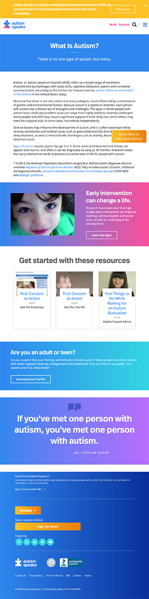

Secondary Research
Learning the use of websites for Autism other places.
Autism has not just one type, but many different ones. This disorder refers to a broad range of conditions characterized by challenges with social skills, repetitive behaviors, speech and nonverbal communications. According the Centers for Disease Control, autism affects 1 in 54 children in the US today. Autism types vary, but are influenced by a combination of genetic and environmental factors. Autism is considered a spectrum disorder, but each person falls at a different place on the spectrum. Each person has a distinct set of strengths and challenges. Signs of Autism are usually apparent by the ages of 2 or 3, but sometimes as early as 18 months.
All information quoted from Autism Speaks at https://www.autismspeaks.org/
Autism Speaks
https://www.autismspeaks.org/
This site begins with a thorough description of Autism. As you scroll there are call to action buttons features at sections to access more information. There is one for how to learn the signs of Autism, a section for resources, a call to action directed towards adults and teens who feel they might have signs.
Autism Society
https://www.autism-society.org/
The first thing to appear on this site is a large section about learning more about the candidates of the 2020 election. There is a learn more call to action button for people to access resources sharing who upholds the values that back Autism. Below there is a brief description of what autism is and then a call to action to learn more. Following are two stories from real people and a call to read more button. After is a resources section for the location options and contact. Lastly is recent news associated with Autism.

South Carolina Autism
https://scautism.org/
One the front page there is a slideshow with a welcome image and following are two call to action buttons for donating and learning more. Next there is a description of what the South Carolina Autism Society is and then a "how you can help" section. An inset box is next with the purpose of this society with a call to action. They have a section about events, volunteer opportunities, covid 19 resources, and lastly a brief section of what autism is.